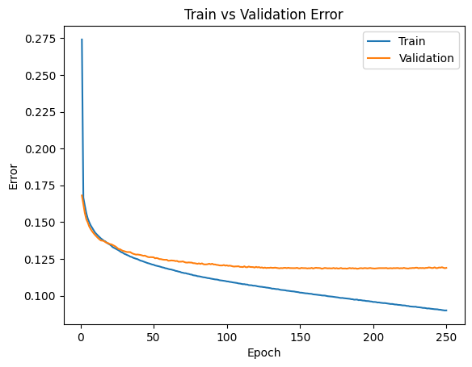
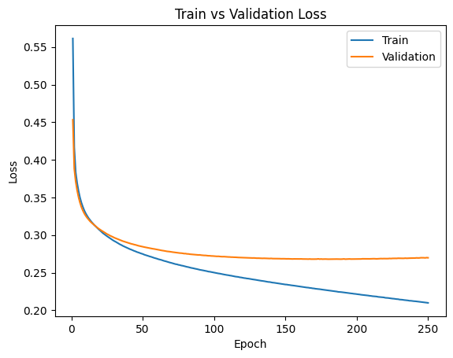

#imports
import torch.cuda as cuda
import torch
import torch.nn as nn
import torch.nn.functional as F
import numpy as np
import matplotlib.pyplot as plt # for plotting
import torch.optim as optim #for gradient descent
import torchvision.models as models
import random
import torchvision.transforms as transforms
import os
import math
from sklearn.metrics import precision_score, recall_score, f1_score, accuracy_score, jaccard_score, hamming_loss#this cell will load the data and put it into tensors for training
max_samples = 50000 #how many samples to use, -1 is all of them
#VGG_16 dataloader: its the same thing but the transforms are slightly off
#only works on dominiks computer
#adding a section to split data intro training/testing/validation
#just keeping it to 50k to make things easier
transform1 = transforms.Compose([
transforms.ToTensor(),
transforms.Resize((224,224)),
transforms.Normalize(mean = [0.485, 0.456, 0.406], std = [0.229, 0.224, 0.225])
])
totensor = transforms.ToTensor()
celeb_data = {}
k = os.listdir("celeba/img_align_celeba")
imageno = 0
with open("celeba/list_attr_celeba.csv") as labels:
classes = labels.readline()
classes = classes.split(sep = ",")
for l in k:
if(max_samples != -1 and imageno > max_samples):
break
lab = labels.readline().split(sep=",")
lab[-1] = lab[-1].replace('\n', "")
name = lab[0]
lab.pop(0)
#print(lab_copy)
celeb_data[name] = (transform1(plt.imread("celeba/img_align_celeba/" + l)),(torch.FloatTensor([int(k) for k in lab])))
imageno +=1
#progress bar :)
if(imageno%(max_samples/100) == 0):
percent = round(imageno/max_samples*100, 3)
percent = ('%.0f' %percent)
print('\r' + str(percent) + "% Complete", end='', flush=True)
C:\Users\Dominik Danda\AppData\Local\Packages\PythonSoftwareFoundation.Python.3.11_qbz5n2kfra8p0\LocalCache\local-packages\Python311\site-packages\torchvision\transforms\functional.py:153: UserWarning: The given NumPy array is not writable, and PyTorch does not support non-writable tensors. This means writing to this tensor will result in undefined behavior. You may want to copy the array to protect its data or make it writable before converting it to a tensor. This type of warning will be suppressed for the rest of this program. (Triggered internally at ..\torch\csrc\utils\tensor_numpy.cpp:212.)
img = torch.from_numpy(pic.transpose((2, 0, 1))).contiguous()100% Complete#this cell will shuffle and split the dataset
sample_ratio = (8, 1, 1) #the ratio used to split the data, does not need to add up to 10
shuf_list = list(celeb_data.keys())
random.shuffle(shuf_list) #I really hope that shuffling a list this long doesnt take that much time
imageno = 0
train_data = []
val_data = []
test_data = []
train_sample_num = sample_ratio[0]/math.fsum(sample_ratio)*max_samples
val_sample_num = sample_ratio[1]/math.fsum(sample_ratio)*max_samples
test_sample_num = sample_ratio[2]/math.fsum(sample_ratio)*max_samples
for i in shuf_list:
if imageno < (train_sample_num):
train_data.append(i)
elif imageno >= (train_sample_num) and imageno < (train_sample_num+val_sample_num):
val_data.append(i)
else:
test_data.append(i)
imageno += 1
print(len(train_data))
print((train_data[0]))40000
001741.jpg#this cell initializes the network
vgg = models.vgg16(pretrained=True)
vgg.features = vgg.features.cuda()
#the output of vgg.features is 512*7*7, we need to build our own classifierC:\Users\Dominik Danda\AppData\Local\Packages\PythonSoftwareFoundation.Python.3.11_qbz5n2kfra8p0\LocalCache\local-packages\Python311\site-packages\torchvision\models\_utils.py:208: UserWarning: The parameter 'pretrained' is deprecated since 0.13 and may be removed in the future, please use 'weights' instead.
warnings.warn(
C:\Users\Dominik Danda\AppData\Local\Packages\PythonSoftwareFoundation.Python.3.11_qbz5n2kfra8p0\LocalCache\local-packages\Python311\site-packages\torchvision\models\_utils.py:223: UserWarning: Arguments other than a weight enum or `None` for 'weights' are deprecated since 0.13 and may be removed in the future. The current behavior is equivalent to passing `weights=VGG16_Weights.IMAGENET1K_V1`. You can also use `weights=VGG16_Weights.DEFAULT` to get the most up-to-date weights.
warnings.warn(msg)#this cell formats the data for the classifier
train_data_2 = []
counter = 0
for i in train_data:
with torch.no_grad():
j = vgg.features(celeb_data[i][0].cuda())
train_data_2.append((j,celeb_data[i][1]))
cuda.empty_cache()
if(counter%(len(train_data)/100) == 0):
percent = round(counter/len(train_data)*100, 3)
percent = ('%.0f' %percent)
print('\rTrain Data is ' + str(percent) + "% Complete", end='', flush=True)
counter += 1
val_data_2 = []
counter = 0
for i in val_data:
with torch.no_grad():
j = vgg.features(celeb_data[i][0].cuda())
val_data_2.append((j,celeb_data[i][1]))
cuda.empty_cache()
if(counter%(len(val_data)/100) == 0):
percent = round(counter/len(val_data)*100, 3)
percent = ('%.0f' %percent)
print('\rValidation Data is ' + str(percent) + "% Complete ", end='', flush=True)
counter += 1
test_data_2 = []
counter = 0
for i in test_data:
with torch.no_grad():
j = vgg.features(celeb_data[i][0].cuda())
test_data_2.append((j,celeb_data[i][1]))
cuda.empty_cache()
if(counter%(len(test_data)/100) == 0):
percent = round(counter/len(test_data)*100, 3)
percent = ('%.0f' %percent)
print('\rTest Data is ' + str(percent) + "% Complete ", end='', flush=True)
counter += 1Test Data is 0% Complete def get_model_name(name, batch_size, learning_rate, epoch):
""" Generate a name for the model consisting of all the hyperparameter values
Args:
config: Configuration object containing the hyperparameters
Returns:
path: A string with the hyperparameter name and value concatenated
"""
name = "model_{0}_bs{1}_lr{2}_epoch{3}".format(name,
batch_size,
learning_rate,
epoch)
return name#classifier, along with evaluate/train functions
import torch.nn as nn
import torch.nn.functional as F
import torch.optim as optim
import numpy as np
class vgg_classifier(nn.Module):
def __init__(self):
super(vgg_classifier, self).__init__()
self.fc1 = nn.Linear(512*7*7, 16, bias = True)
self.fc2 = nn.Linear(16, 16, bias = True)
#don't want to explode the feature map too much
def forward(self, x):
x = x.view(-1, 512*7*7)
x = F.relu(self.fc1(x))
x = self.fc2(x)
return x
#evaluate function (put the evaluation data into 1 big batch and compute error/loss)
def vgg_evaluate(model, data_list):
criterion = nn.BCEWithLogitsLoss()
total_acc = 0
total_loss = 0
for i in range(len(data_list)):
inputs = data_list[i][0]
labels = data_list[i][1]
if torch.cuda.is_available():
inputs = inputs.cuda()
labels = labels.cuda()
labels = torch.stack([labels])
outputs = model(inputs)
#print(outputs.shape)
#print(outputs)
#outputs = torch.flatten(outputs)
#print(labels.shape)
loss = criterion(outputs, labels)
total_loss += loss.item()
probs = torch.sigmoid(outputs).detach().cpu().numpy()
preds = (probs > 0.5).astype(int)
targets_np = labels.cpu().numpy()
accuracy = hamming_loss(targets_np, preds)
total_acc += accuracy
#print(accuracy,total_acc)
return (total_acc/len(data_list), total_loss/len(data_list))
#training loop
def vgg_train(model, train_list, val_list, epochs, learning_rate, batch_size):
#train/val_list: train_data,val_data
#train_data = list of tuples (i,j), i =
optimizer = optim.SGD(model.parameters(), lr=learning_rate, momentum=0.9)
criterion = nn.BCEWithLogitsLoss()
train_acc = np.zeros(epochs)
train_loss = np.zeros(epochs)
val_acc = np.zeros(epochs)
val_loss = np.zeros(epochs)
#state_dict_list = [] #gonna leave this unfinished for now
epoch = 0
for i in range(epochs):
total_acc = 0
total_train_loss = 0
counter = 0
train_list_copy = train_list[:]
random.shuffle(train_list_copy)
while train_list_copy:
batch = train_list_copy[:batch_size]
train_list_copy = train_list_copy[batch_size:]
inputs = torch.stack([i[0] for i in batch])
labels = torch.stack([i[1] for i in batch])
if torch.cuda.is_available():
inputs = inputs.cuda()
labels = labels.cuda()
outputs = model(inputs)
#print(outputs.shape)
#print(labels.shape)
loss = criterion(outputs, labels)
optimizer.zero_grad()
loss.backward()
optimizer.step()
total_train_loss += loss.item()
probs = torch.sigmoid(outputs).detach().cpu().numpy()
#print(probs)
preds = (probs > 0.5).astype(int)
#print(preds)
targets_np = labels.cpu().numpy()
#print(targets_np)
accuracy = hamming_loss(targets_np, preds)
total_acc += accuracy
#print(accuracy,total_acc)
#break
if(counter%(len(train_list)/batch_size/100) == 0):
percent = round(counter/(len(train_list)/batch_size)*100, 3)
percent = ('%.0f' %percent)
print('\rThis epoch is ' + str(percent) + "% Complete", end='', flush=True)
counter += 1
print("\n")
train_acc[epoch] = float(total_acc) / (len(train_list)/batch_size)
train_loss[epoch] = float(total_train_loss) / (len(train_list)/batch_size)
(val_acc[epoch], val_loss[epoch]) = vgg_evaluate(model, val_list)
print(("Epoch {}: Train acc: {}, Train loss: {} |"+
"Validation acc: {}, Validation loss: {}").format(
epoch + 1,
train_acc[epoch],
train_loss[epoch],
val_acc[epoch],
val_loss[epoch]))
#checkpoint the model, if val err is lower than the lowest val err so far
if epoch > 0 and val_acc[epoch] < np.min(val_acc[:epoch]):
best_epoch = epoch
name = get_model_name("baseline_net", batch_size, learning_rate, best_epoch)
best_model_wts = model.state_dict()
#print("New best model found and saved")
#os.de
epoch += 1
# Save the current model (checkpoint) to a file, checkpoint every epoch
#not saving it to a file, I'm getting some runtime errors I don't wanna deal with, I'm just saving the state_dict
#state_dict_list.append((model.state_dict(),epoch))
torch.save(best_model_wts, "checkpoints/"+ name)
print('Finished Training')
# plot the train/val loss/errors
num_epochs = np.arange(1, epochs + 1)
plt.title("Train vs Validation Error")
n = len(train_acc) # number of epochs
plt.plot(range(1,n+1), train_acc, label="Train")
plt.plot(range(1,n+1), val_acc, label="Validation")
plt.xlabel("Epoch")
plt.ylabel("Error")
plt.legend(loc='best')
plt.show()
plt.title("Train vs Validation Loss")
plt.plot(range(1,n+1), train_loss, label="Train")
plt.plot(range(1,n+1), val_loss, label="Validation")
plt.xlabel("Epoch")
plt.ylabel("Loss")
plt.legend(loc='best')
plt.show()vgg_train(vgg_classifier().cuda(), train_data_2, val_data_2, 250, 0.0005, 256)This epoch is 96% Complete
Epoch 1: Train acc: 0.274090625, Train loss: 0.5613028924942016 |Validation acc: 0.168125, Validation loss: 0.4532789856821299
This epoch is 96% Complete
Epoch 2: Train acc: 0.1666625, Train loss: 0.41679997272491454 |Validation acc: 0.1621125, Validation loss: 0.38832315423190594
This epoch is 96% Complete
Epoch 3: Train acc: 0.1612, Train loss: 0.383428157043457 |Validation acc: 0.1562875, Validation loss: 0.37118581203520296
This epoch is 96% Complete
Epoch 4: Train acc: 0.156175, Train loss: 0.3693791042327881 |Validation acc: 0.1520125, Validation loss: 0.3594733890220523
This epoch is 96% Complete
Epoch 5: Train acc: 0.1524921875, Train loss: 0.358648260307312 |Validation acc: 0.149825, Validation loss: 0.35039644064605235
This epoch is 96% Complete
Epoch 6: Train acc: 0.1499625, Train loss: 0.34987729969024656 |Validation acc: 0.1471, Validation loss: 0.34312255293726923
This epoch is 96% Complete
Epoch 7: Train acc: 0.1478296875, Train loss: 0.34305489463806155 |Validation acc: 0.1452875, Validation loss: 0.3372842748239636
This epoch is 96% Complete
Epoch 8: Train acc: 0.1461546875, Train loss: 0.3375778263092041 |Validation acc: 0.143775, Validation loss: 0.3325833157896996
This epoch is 96% Complete
Epoch 9: Train acc: 0.1444375, Train loss: 0.33279409103393554 |Validation acc: 0.1424625, Validation loss: 0.32876266851723196
This epoch is 96% Complete
Epoch 10: Train acc: 0.142921875, Train loss: 0.3289130805969238 |Validation acc: 0.141275, Validation loss: 0.3256477513000369
This epoch is 96% Complete
Epoch 11: Train acc: 0.141840625, Train loss: 0.32563019008636473 |Validation acc: 0.1402625, Validation loss: 0.3229677631035447
This epoch is 96% Complete
Epoch 12: Train acc: 0.1408453125, Train loss: 0.3226109359741211 |Validation acc: 0.139225, Validation loss: 0.32062827439010144
This epoch is 96% Complete
Epoch 13: Train acc: 0.139865625, Train loss: 0.32008957920074466 |Validation acc: 0.138325, Validation loss: 0.31842230349034073
This epoch is 96% Complete
Epoch 14: Train acc: 0.1389109375, Train loss: 0.31767521324157716 |Validation acc: 0.1375375, Validation loss: 0.31656201970428227
This epoch is 96% Complete
Epoch 15: Train acc: 0.1382, Train loss: 0.3155182874679565 |Validation acc: 0.1374625, Validation loss: 0.3149275662779808
This epoch is 96% Complete
Epoch 16: Train acc: 0.1373734375, Train loss: 0.31334930992126464 |Validation acc: 0.1371875, Validation loss: 0.3132485712230206
This epoch is 96% Complete
Epoch 17: Train acc: 0.136921875, Train loss: 0.3114716299057007 |Validation acc: 0.1364625, Validation loss: 0.31156450611203906
This epoch is 96% Complete
Epoch 18: Train acc: 0.136084375, Train loss: 0.3096132696151733 |Validation acc: 0.135925, Validation loss: 0.3101089678227901
This epoch is 96% Complete
Epoch 19: Train acc: 0.1353765625, Train loss: 0.30780038986206054 |Validation acc: 0.1357375, Validation loss: 0.3086215256810188
This epoch is 96% Complete
Epoch 20: Train acc: 0.1348234375, Train loss: 0.30618505840301513 |Validation acc: 0.1351375, Validation loss: 0.3072938868612051
This epoch is 96% Complete
Epoch 21: Train acc: 0.1340703125, Train loss: 0.3044615524291992 |Validation acc: 0.1349625, Validation loss: 0.30607345022708177
This epoch is 96% Complete
Epoch 22: Train acc: 0.1330640625, Train loss: 0.30264517726898194 |Validation acc: 0.1345125, Validation loss: 0.30486509861946104
This epoch is 96% Complete
Epoch 23: Train acc: 0.13253125, Train loss: 0.30119328441619875 |Validation acc: 0.13395, Validation loss: 0.3035324459694326
This epoch is 96% Complete
Epoch 24: Train acc: 0.1320203125, Train loss: 0.29981687889099123 |Validation acc: 0.133425, Validation loss: 0.3024512317031622
This epoch is 96% Complete
Epoch 25: Train acc: 0.131440625, Train loss: 0.29839935913085935 |Validation acc: 0.1326375, Validation loss: 0.3012824587807059
This epoch is 96% Complete
Epoch 26: Train acc: 0.130921875, Train loss: 0.29703866958618164 |Validation acc: 0.1317625, Validation loss: 0.3003504787676036
This epoch is 96% Complete
Epoch 27: Train acc: 0.130246875, Train loss: 0.29581386547088623 |Validation acc: 0.131625, Validation loss: 0.29923936195373535
This epoch is 96% Complete
Epoch 28: Train acc: 0.129565625, Train loss: 0.2944689680099487 |Validation acc: 0.1310125, Validation loss: 0.2983982542976737
This epoch is 96% Complete
Epoch 29: Train acc: 0.1291796875, Train loss: 0.29320806522369386 |Validation acc: 0.130525, Validation loss: 0.2975022230990231
This epoch is 96% Complete
Epoch 30: Train acc: 0.1284890625, Train loss: 0.2920390289306641 |Validation acc: 0.130275, Validation loss: 0.2965056730210781
This epoch is 96% Complete
Epoch 31: Train acc: 0.1281109375, Train loss: 0.29105666522979734 |Validation acc: 0.1299125, Validation loss: 0.2957411558173597
This epoch is 96% Complete
Epoch 32: Train acc: 0.1276, Train loss: 0.2898867570877075 |Validation acc: 0.1296875, Validation loss: 0.29493025848940013
This epoch is 96% Complete
Epoch 33: Train acc: 0.127234375, Train loss: 0.2888182342529297 |Validation acc: 0.129675, Validation loss: 0.2941620876096189
This epoch is 96% Complete
Epoch 34: Train acc: 0.1265921875, Train loss: 0.2876346767425537 |Validation acc: 0.1296625, Validation loss: 0.2934501021191478
This epoch is 96% Complete
Epoch 35: Train acc: 0.1263671875, Train loss: 0.286743124961853 |Validation acc: 0.129025, Validation loss: 0.2927193481773138
This epoch is 96% Complete
Epoch 36: Train acc: 0.1258171875, Train loss: 0.28565905628204347 |Validation acc: 0.128525, Validation loss: 0.29192274852320554
This epoch is 96% Complete
Epoch 37: Train acc: 0.1254640625, Train loss: 0.2847805889129639 |Validation acc: 0.12825, Validation loss: 0.2912883929386735
This epoch is 96% Complete
Epoch 38: Train acc: 0.1251390625, Train loss: 0.2838995496749878 |Validation acc: 0.12795, Validation loss: 0.2907116205275059
This epoch is 96% Complete
Epoch 39: Train acc: 0.12486875, Train loss: 0.28304559116363526 |Validation acc: 0.1280375, Validation loss: 0.2900747337736189
This epoch is 96% Complete
Epoch 40: Train acc: 0.1243453125, Train loss: 0.2820508472442627 |Validation acc: 0.127875, Validation loss: 0.2895073368243873
This epoch is 96% Complete
Epoch 41: Train acc: 0.1238828125, Train loss: 0.28124365158081055 |Validation acc: 0.1277375, Validation loss: 0.28887375814169647
This epoch is 96% Complete
Epoch 42: Train acc: 0.123646875, Train loss: 0.2805607709884644 |Validation acc: 0.127425, Validation loss: 0.28828848153054715
This epoch is 96% Complete
Epoch 43: Train acc: 0.1232765625, Train loss: 0.2796812473297119 |Validation acc: 0.1271625, Validation loss: 0.28787278134971855
This epoch is 96% Complete
Epoch 44: Train acc: 0.1229125, Train loss: 0.27888953342437744 |Validation acc: 0.1272875, Validation loss: 0.28730865221992136
This epoch is 96% Complete
Epoch 45: Train acc: 0.1225953125, Train loss: 0.2782418197631836 |Validation acc: 0.1268375, Validation loss: 0.2868804367356002
This epoch is 96% Complete
Epoch 46: Train acc: 0.1221703125, Train loss: 0.2773553337097168 |Validation acc: 0.1263875, Validation loss: 0.28629899297654626
This epoch is 96% Complete
Epoch 47: Train acc: 0.121921875, Train loss: 0.27677905197143554 |Validation acc: 0.126175, Validation loss: 0.285755356284976
This epoch is 96% Complete
Epoch 48: Train acc: 0.121578125, Train loss: 0.2760518365859985 |Validation acc: 0.12625, Validation loss: 0.2853047036357224
This epoch is 96% Complete
Epoch 49: Train acc: 0.121228125, Train loss: 0.27536634426116946 |Validation acc: 0.1261875, Validation loss: 0.28486825096085666
This epoch is 96% Complete
Epoch 50: Train acc: 0.1210484375, Train loss: 0.27482244472503664 |Validation acc: 0.126125, Validation loss: 0.2844805030792952
This epoch is 96% Complete
Epoch 51: Train acc: 0.120603125, Train loss: 0.2739350828170776 |Validation acc: 0.1254625, Validation loss: 0.28402483326345684
This epoch is 96% Complete
Epoch 52: Train acc: 0.1203734375, Train loss: 0.2733625783920288 |Validation acc: 0.1256375, Validation loss: 0.28363633210808037
This epoch is 96% Complete
Epoch 53: Train acc: 0.120203125, Train loss: 0.27273354454040527 |Validation acc: 0.1253875, Validation loss: 0.283321268543601
This epoch is 96% Complete
Epoch 54: Train acc: 0.1199046875, Train loss: 0.27212140884399416 |Validation acc: 0.124925, Validation loss: 0.28290841901749375
This epoch is 96% Complete
Epoch 55: Train acc: 0.1195640625, Train loss: 0.2714562072753906 |Validation acc: 0.124875, Validation loss: 0.2824763508491218
This epoch is 96% Complete
Epoch 56: Train acc: 0.1192765625, Train loss: 0.27097847442626954 |Validation acc: 0.124625, Validation loss: 0.282167679605633
This epoch is 96% Complete
Epoch 57: Train acc: 0.1190890625, Train loss: 0.2703067762374878 |Validation acc: 0.124475, Validation loss: 0.28175306095927954
This epoch is 96% Complete
Epoch 58: Train acc: 0.1187, Train loss: 0.26962292861938475 |Validation acc: 0.124425, Validation loss: 0.2814907399348915
This epoch is 96% Complete
Epoch 59: Train acc: 0.1185515625, Train loss: 0.26912999315261843 |Validation acc: 0.1244625, Validation loss: 0.28110014973729847
This epoch is 96% Complete
Epoch 60: Train acc: 0.118221875, Train loss: 0.26855659255981446 |Validation acc: 0.1238125, Validation loss: 0.28076431770175697
This epoch is 96% Complete
Epoch 61: Train acc: 0.117965625, Train loss: 0.2678533205986023 |Validation acc: 0.12385, Validation loss: 0.28044997434318064
This epoch is 96% Complete
Epoch 62: Train acc: 0.117859375, Train loss: 0.2674196139335632 |Validation acc: 0.124, Validation loss: 0.28004585146829486
This epoch is 96% Complete
Epoch 63: Train acc: 0.1175484375, Train loss: 0.26691041240692137 |Validation acc: 0.123925, Validation loss: 0.2796111338585615
This epoch is 96% Complete
Epoch 64: Train acc: 0.1173140625, Train loss: 0.2662397511482239 |Validation acc: 0.1238375, Validation loss: 0.27936629878133534
This epoch is 96% Complete
Epoch 65: Train acc: 0.1169015625, Train loss: 0.2655961175918579 |Validation acc: 0.1235375, Validation loss: 0.27900877030044796
This epoch is 96% Complete
Epoch 66: Train acc: 0.1167453125, Train loss: 0.26516161851882936 |Validation acc: 0.1236625, Validation loss: 0.2786589558549225
This epoch is 96% Complete
Epoch 67: Train acc: 0.1164203125, Train loss: 0.2645437479972839 |Validation acc: 0.123125, Validation loss: 0.2783033084183931
This epoch is 96% Complete
Epoch 68: Train acc: 0.116259375, Train loss: 0.2640019639968872 |Validation acc: 0.123125, Validation loss: 0.27812462703734636
This epoch is 96% Complete
Epoch 69: Train acc: 0.1158015625, Train loss: 0.26342077713012696 |Validation acc: 0.123175, Validation loss: 0.2778764274738729
This epoch is 96% Complete
Epoch 70: Train acc: 0.1156515625, Train loss: 0.2629814613342285 |Validation acc: 0.1233375, Validation loss: 0.27752777666524053
This epoch is 96% Complete
Epoch 71: Train acc: 0.1153625, Train loss: 0.2624156871795654 |Validation acc: 0.1229, Validation loss: 0.27728010147064924
This epoch is 96% Complete
Epoch 72: Train acc: 0.1153265625, Train loss: 0.2619383813858032 |Validation acc: 0.1225875, Validation loss: 0.2770096475236118
This epoch is 96% Complete
Epoch 73: Train acc: 0.114971875, Train loss: 0.2613012913703918 |Validation acc: 0.122525, Validation loss: 0.276772733977437
This epoch is 96% Complete
Epoch 74: Train acc: 0.114834375, Train loss: 0.26104396562576293 |Validation acc: 0.1226625, Validation loss: 0.2765434104673564
This epoch is 96% Complete
Epoch 75: Train acc: 0.1144890625, Train loss: 0.2603767428398132 |Validation acc: 0.1225625, Validation loss: 0.27625428385436535
This epoch is 96% Complete
Epoch 76: Train acc: 0.1143734375, Train loss: 0.2600903751373291 |Validation acc: 0.1225375, Validation loss: 0.27603578082844615
This epoch is 96% Complete
Epoch 77: Train acc: 0.1139515625, Train loss: 0.2594803634643555 |Validation acc: 0.12215, Validation loss: 0.2759249836973846
This epoch is 96% Complete
Epoch 78: Train acc: 0.1138203125, Train loss: 0.2591770546913147 |Validation acc: 0.1221125, Validation loss: 0.2756880026742816
This epoch is 96% Complete
Epoch 79: Train acc: 0.11365625, Train loss: 0.25863555459976195 |Validation acc: 0.1218875, Validation loss: 0.2753215012267232
This epoch is 96% Complete
Epoch 80: Train acc: 0.113303125, Train loss: 0.25819281444549563 |Validation acc: 0.1217, Validation loss: 0.275334472720325
This epoch is 96% Complete
Epoch 81: Train acc: 0.1132203125, Train loss: 0.2576893723487854 |Validation acc: 0.1220125, Validation loss: 0.27493510218709705
This epoch is 96% Complete
Epoch 82: Train acc: 0.113028125, Train loss: 0.257333062171936 |Validation acc: 0.1216, Validation loss: 0.2748715362071991
This epoch is 96% Complete
Epoch 83: Train acc: 0.1127734375, Train loss: 0.2568225721359253 |Validation acc: 0.122025, Validation loss: 0.2745292886376381
This epoch is 96% Complete
Epoch 84: Train acc: 0.11255, Train loss: 0.25630636940002444 |Validation acc: 0.12145, Validation loss: 0.2743654290437698
This epoch is 96% Complete
Epoch 85: Train acc: 0.112475, Train loss: 0.25599399280548096 |Validation acc: 0.121275, Validation loss: 0.2742687022008002
This epoch is 96% Complete
Epoch 86: Train acc: 0.1122296875, Train loss: 0.2555222960472107 |Validation acc: 0.1213125, Validation loss: 0.2740934672087431
This epoch is 96% Complete
Epoch 87: Train acc: 0.112003125, Train loss: 0.2551070448875427 |Validation acc: 0.12145, Validation loss: 0.27383353223726153
This epoch is 96% Complete
Epoch 88: Train acc: 0.1119328125, Train loss: 0.2547540830612183 |Validation acc: 0.121775, Validation loss: 0.2737333944328129
This epoch is 96% Complete
Epoch 89: Train acc: 0.111671875, Train loss: 0.2542733069419861 |Validation acc: 0.1213625, Validation loss: 0.2735160480938852
This epoch is 96% Complete
Epoch 90: Train acc: 0.111478125, Train loss: 0.25380019340515136 |Validation acc: 0.121775, Validation loss: 0.2735910866208375
This epoch is 96% Complete
Epoch 91: Train acc: 0.1113453125, Train loss: 0.2534909440994263 |Validation acc: 0.12125, Validation loss: 0.27325785042718054
This epoch is 96% Complete
Epoch 92: Train acc: 0.11111875, Train loss: 0.25312221326828005 |Validation acc: 0.121275, Validation loss: 0.27304775362983347
This epoch is 96% Complete
Epoch 93: Train acc: 0.111046875, Train loss: 0.2527301189422607 |Validation acc: 0.1209875, Validation loss: 0.27289288250356913
This epoch is 96% Complete
Epoch 94: Train acc: 0.1108765625, Train loss: 0.25241003761291503 |Validation acc: 0.1208875, Validation loss: 0.2728705243289471
This epoch is 96% Complete
Epoch 95: Train acc: 0.1105515625, Train loss: 0.25195523777008055 |Validation acc: 0.120625, Validation loss: 0.27259967694729564
This epoch is 96% Complete
Epoch 96: Train acc: 0.110440625, Train loss: 0.2514312851905823 |Validation acc: 0.120575, Validation loss: 0.2724262092836201
This epoch is 96% Complete
Epoch 97: Train acc: 0.1103078125, Train loss: 0.2512276097297668 |Validation acc: 0.1205875, Validation loss: 0.27239516963139176
This epoch is 96% Complete
Epoch 98: Train acc: 0.11015, Train loss: 0.25084694185256956 |Validation acc: 0.1208875, Validation loss: 0.27216541097983715
This epoch is 96% Complete
Epoch 99: Train acc: 0.110021875, Train loss: 0.2504968780517578 |Validation acc: 0.12045, Validation loss: 0.27211242407374087
This epoch is 96% Complete
Epoch 100: Train acc: 0.10975, Train loss: 0.25010333776474 |Validation acc: 0.1206625, Validation loss: 0.27194114885628223
This epoch is 96% Complete
Epoch 101: Train acc: 0.1096953125, Train loss: 0.24967951498031615 |Validation acc: 0.1203125, Validation loss: 0.271798822638765
This epoch is 96% Complete
Epoch 102: Train acc: 0.1094359375, Train loss: 0.2493722978591919 |Validation acc: 0.120475, Validation loss: 0.27163864483609795
This epoch is 96% Complete
Epoch 103: Train acc: 0.1093171875, Train loss: 0.24894518451690673 |Validation acc: 0.120275, Validation loss: 0.27170104507803916
This epoch is 96% Complete
Epoch 104: Train acc: 0.109103125, Train loss: 0.2486991108894348 |Validation acc: 0.1199875, Validation loss: 0.2714988652788103
This epoch is 96% Complete
Epoch 105: Train acc: 0.1089640625, Train loss: 0.24826716651916503 |Validation acc: 0.119825, Validation loss: 0.2713077112663537
This epoch is 96% Complete
Epoch 106: Train acc: 0.1087921875, Train loss: 0.24784725198745727 |Validation acc: 0.1199375, Validation loss: 0.2712361156065017
This epoch is 96% Complete
Epoch 107: Train acc: 0.108678125, Train loss: 0.247521284198761 |Validation acc: 0.11995, Validation loss: 0.2712819597993046
This epoch is 96% Complete
Epoch 108: Train acc: 0.1083859375, Train loss: 0.2471657175064087 |Validation acc: 0.12005, Validation loss: 0.2711299551576376
This epoch is 96% Complete
Epoch 109: Train acc: 0.1082890625, Train loss: 0.2468435793876648 |Validation acc: 0.119625, Validation loss: 0.2709665871504694
This epoch is 96% Complete
Epoch 110: Train acc: 0.1080734375, Train loss: 0.24658996028900146 |Validation acc: 0.1196, Validation loss: 0.2708575811073184
This epoch is 96% Complete
Epoch 111: Train acc: 0.10788125, Train loss: 0.2461762590408325 |Validation acc: 0.1194875, Validation loss: 0.27080567738227546
This epoch is 96% Complete
Epoch 112: Train acc: 0.1079015625, Train loss: 0.24592690048217775 |Validation acc: 0.1199875, Validation loss: 0.27061932586096227
This epoch is 96% Complete
Epoch 113: Train acc: 0.1076484375, Train loss: 0.24553777494430543 |Validation acc: 0.1194125, Validation loss: 0.27061317401602863
This epoch is 96% Complete
Epoch 114: Train acc: 0.1076375, Train loss: 0.24526063861846925 |Validation acc: 0.1194, Validation loss: 0.2704704774979502
This epoch is 96% Complete
Epoch 115: Train acc: 0.107240625, Train loss: 0.24474447841644287 |Validation acc: 0.1198625, Validation loss: 0.27044491447359326
This epoch is 96% Complete
Epoch 116: Train acc: 0.1071578125, Train loss: 0.24450814867019655 |Validation acc: 0.11955, Validation loss: 0.27027490485310557
This epoch is 96% Complete
Epoch 117: Train acc: 0.10711875, Train loss: 0.24430451526641847 |Validation acc: 0.1195, Validation loss: 0.27017528314217926
This epoch is 96% Complete
Epoch 118: Train acc: 0.1068578125, Train loss: 0.24379735059738158 |Validation acc: 0.119475, Validation loss: 0.27010335213951764
This epoch is 96% Complete
Epoch 119: Train acc: 0.1068546875, Train loss: 0.24359510555267333 |Validation acc: 0.1191625, Validation loss: 0.27003162843659523
This epoch is 96% Complete
Epoch 120: Train acc: 0.106690625, Train loss: 0.24315759887695312 |Validation acc: 0.1196375, Validation loss: 0.2699976841192693
This epoch is 96% Complete
Epoch 121: Train acc: 0.1064203125, Train loss: 0.24281471843719482 |Validation acc: 0.1192875, Validation loss: 0.2698516986608505
This epoch is 96% Complete
Epoch 122: Train acc: 0.1062453125, Train loss: 0.2426172755241394 |Validation acc: 0.1194875, Validation loss: 0.26980234445221724
This epoch is 96% Complete
Epoch 123: Train acc: 0.106125, Train loss: 0.24223396463394165 |Validation acc: 0.11905, Validation loss: 0.2697965656854212
This epoch is 96% Complete
Epoch 124: Train acc: 0.1060578125, Train loss: 0.24207538986206054 |Validation acc: 0.1192625, Validation loss: 0.2696907086137682
This epoch is 96% Complete
Epoch 125: Train acc: 0.1058703125, Train loss: 0.24168843841552734 |Validation acc: 0.11885, Validation loss: 0.26967129415273666
This epoch is 96% Complete
Epoch 126: Train acc: 0.1057859375, Train loss: 0.241416317653656 |Validation acc: 0.11915, Validation loss: 0.26943478746898475
This epoch is 96% Complete
Epoch 127: Train acc: 0.105565625, Train loss: 0.24106133546829223 |Validation acc: 0.1188375, Validation loss: 0.2694620917160064
This epoch is 96% Complete
Epoch 128: Train acc: 0.1054765625, Train loss: 0.2408407793045044 |Validation acc: 0.119, Validation loss: 0.2695267784949392
This epoch is 96% Complete
Epoch 129: Train acc: 0.1053, Train loss: 0.2405117176055908 |Validation acc: 0.118925, Validation loss: 0.26930835333243014
This epoch is 96% Complete
Epoch 130: Train acc: 0.10513125, Train loss: 0.24023094053268432 |Validation acc: 0.1191375, Validation loss: 0.2692043022811413
This epoch is 96% Complete
Epoch 131: Train acc: 0.1048171875, Train loss: 0.2398435667037964 |Validation acc: 0.11895, Validation loss: 0.2692439007718116
This epoch is 96% Complete
Epoch 132: Train acc: 0.104825, Train loss: 0.23949844999313355 |Validation acc: 0.118975, Validation loss: 0.2691533434934914
This epoch is 96% Complete
Epoch 133: Train acc: 0.1046796875, Train loss: 0.23920567579269408 |Validation acc: 0.1191, Validation loss: 0.26916443219445646
This epoch is 96% Complete
Epoch 134: Train acc: 0.1045046875, Train loss: 0.23895353775024414 |Validation acc: 0.1189375, Validation loss: 0.2689825168360025
This epoch is 96% Complete
Epoch 135: Train acc: 0.10450625, Train loss: 0.23869134368896483 |Validation acc: 0.118825, Validation loss: 0.2690873518209904
This epoch is 96% Complete
Epoch 136: Train acc: 0.1042046875, Train loss: 0.23833194131851196 |Validation acc: 0.1186375, Validation loss: 0.2689951410442591
This epoch is 96% Complete
Epoch 137: Train acc: 0.1039921875, Train loss: 0.23795714292526246 |Validation acc: 0.1188375, Validation loss: 0.2688604761201888
This epoch is 96% Complete
Epoch 138: Train acc: 0.1039015625, Train loss: 0.23762521619796753 |Validation acc: 0.118725, Validation loss: 0.2688898285113275
This epoch is 96% Complete
Epoch 139: Train acc: 0.1037625, Train loss: 0.2375285301208496 |Validation acc: 0.1189375, Validation loss: 0.2687665187176317
This epoch is 96% Complete
Epoch 140: Train acc: 0.1037125, Train loss: 0.23714166564941405 |Validation acc: 0.118975, Validation loss: 0.26892017279416325
This epoch is 96% Complete
Epoch 141: Train acc: 0.10345625, Train loss: 0.23674790124893189 |Validation acc: 0.118775, Validation loss: 0.26868716681562366
This epoch is 96% Complete
Epoch 142: Train acc: 0.103375, Train loss: 0.23658879318237305 |Validation acc: 0.1190125, Validation loss: 0.2686757037386298
This epoch is 96% Complete
Epoch 143: Train acc: 0.103203125, Train loss: 0.23628922052383422 |Validation acc: 0.1188125, Validation loss: 0.2686830961484462
This epoch is 96% Complete
Epoch 144: Train acc: 0.1030765625, Train loss: 0.2359657070159912 |Validation acc: 0.1187875, Validation loss: 0.2686600227430463
This epoch is 96% Complete
Epoch 145: Train acc: 0.1030140625, Train loss: 0.23567872495651246 |Validation acc: 0.1187125, Validation loss: 0.2686540928401053
This epoch is 96% Complete
Epoch 146: Train acc: 0.1029, Train loss: 0.23550696315765382 |Validation acc: 0.11875, Validation loss: 0.26856400571726263
This epoch is 96% Complete
Epoch 147: Train acc: 0.102690625, Train loss: 0.23504490308761597 |Validation acc: 0.1187875, Validation loss: 0.26846329797767104
This epoch is 96% Complete
Epoch 148: Train acc: 0.1025484375, Train loss: 0.2348835364341736 |Validation acc: 0.118975, Validation loss: 0.26849275283515456
This epoch is 96% Complete
Epoch 149: Train acc: 0.102428125, Train loss: 0.23459980449676512 |Validation acc: 0.1186375, Validation loss: 0.2684953292928636
This epoch is 96% Complete
Epoch 150: Train acc: 0.102121875, Train loss: 0.23422910499572755 |Validation acc: 0.1185625, Validation loss: 0.268376724056527
This epoch is 96% Complete
Epoch 151: Train acc: 0.1020984375, Train loss: 0.23413066263198853 |Validation acc: 0.1189375, Validation loss: 0.2683442854303867
This epoch is 96% Complete
Epoch 152: Train acc: 0.101934375, Train loss: 0.23374455194473268 |Validation acc: 0.118775, Validation loss: 0.2684004445489496
This epoch is 96% Complete
Epoch 153: Train acc: 0.1017546875, Train loss: 0.2335554669380188 |Validation acc: 0.11875, Validation loss: 0.26833048074021937
This epoch is 96% Complete
Epoch 154: Train acc: 0.101646875, Train loss: 0.23318858604431153 |Validation acc: 0.1187625, Validation loss: 0.2682487062107772
This epoch is 96% Complete
Epoch 155: Train acc: 0.1016078125, Train loss: 0.23300628471374513 |Validation acc: 0.11855, Validation loss: 0.26815775886923077
This epoch is 96% Complete
Epoch 156: Train acc: 0.1014390625, Train loss: 0.23273561553955077 |Validation acc: 0.1187, Validation loss: 0.26825553061515095
This epoch is 96% Complete
Epoch 157: Train acc: 0.1013671875, Train loss: 0.23245155506134033 |Validation acc: 0.118625, Validation loss: 0.26821313511505723
This epoch is 96% Complete
Epoch 158: Train acc: 0.10126875, Train loss: 0.2321204291343689 |Validation acc: 0.1189625, Validation loss: 0.2681557900056243
This epoch is 96% Complete
Epoch 159: Train acc: 0.100959375, Train loss: 0.2318967043876648 |Validation acc: 0.1184875, Validation loss: 0.2681063210178167
This epoch is 96% Complete
Epoch 160: Train acc: 0.1008953125, Train loss: 0.23161397619247437 |Validation acc: 0.1188375, Validation loss: 0.2681937754333019
This epoch is 96% Complete
Epoch 161: Train acc: 0.1007828125, Train loss: 0.23135986051559448 |Validation acc: 0.119, Validation loss: 0.26826163229569794
This epoch is 96% Complete
Epoch 162: Train acc: 0.100634375, Train loss: 0.2310218195915222 |Validation acc: 0.1188625, Validation loss: 0.26811789515279233
This epoch is 96% Complete
Epoch 163: Train acc: 0.1005203125, Train loss: 0.2308014298439026 |Validation acc: 0.118875, Validation loss: 0.2681264806240797
This epoch is 96% Complete
Epoch 164: Train acc: 0.100425, Train loss: 0.23043852310180665 |Validation acc: 0.1187375, Validation loss: 0.2681108100764453
This epoch is 96% Complete
Epoch 165: Train acc: 0.100215625, Train loss: 0.23020898294448852 |Validation acc: 0.11835, Validation loss: 0.26804865354672075
This epoch is 96% Complete
Epoch 166: Train acc: 0.1001484375, Train loss: 0.23007914485931397 |Validation acc: 0.1186125, Validation loss: 0.26795129681676627
This epoch is 96% Complete
Epoch 167: Train acc: 0.1001359375, Train loss: 0.2297148920059204 |Validation acc: 0.1188875, Validation loss: 0.2681421990022063
This epoch is 96% Complete
Epoch 168: Train acc: 0.0999078125, Train loss: 0.22955319709777833 |Validation acc: 0.118725, Validation loss: 0.2679526894405484
This epoch is 96% Complete
Epoch 169: Train acc: 0.0997046875, Train loss: 0.22915776987075806 |Validation acc: 0.1186125, Validation loss: 0.2679944588724524
This epoch is 96% Complete
Epoch 170: Train acc: 0.099615625, Train loss: 0.22898528470993043 |Validation acc: 0.1186875, Validation loss: 0.26796135937124493
This epoch is 96% Complete
Epoch 171: Train acc: 0.099546875, Train loss: 0.2286259093284607 |Validation acc: 0.1186125, Validation loss: 0.2679575146969408
This epoch is 96% Complete
Epoch 172: Train acc: 0.0994109375, Train loss: 0.22846791324615479 |Validation acc: 0.1186, Validation loss: 0.26801521305255593
This epoch is 96% Complete
Epoch 173: Train acc: 0.0992578125, Train loss: 0.22819376993179322 |Validation acc: 0.1188875, Validation loss: 0.2683185701083392
This epoch is 96% Complete
Epoch 174: Train acc: 0.09904375, Train loss: 0.22801485557556153 |Validation acc: 0.1185, Validation loss: 0.26795443084537984
This epoch is 96% Complete
Epoch 175: Train acc: 0.0989875, Train loss: 0.22768967351913452 |Validation acc: 0.118775, Validation loss: 0.26813265188485386
This epoch is 96% Complete
Epoch 176: Train acc: 0.09886875, Train loss: 0.22742645311355592 |Validation acc: 0.118475, Validation loss: 0.2679393396731466
This epoch is 96% Complete
Epoch 177: Train acc: 0.0986359375, Train loss: 0.2271713604927063 |Validation acc: 0.118575, Validation loss: 0.26801304373405876
This epoch is 96% Complete
Epoch 178: Train acc: 0.098503125, Train loss: 0.2268695797920227 |Validation acc: 0.1188625, Validation loss: 0.26806202512048183
This epoch is 96% Complete
Epoch 179: Train acc: 0.098540625, Train loss: 0.22655831260681153 |Validation acc: 0.1184875, Validation loss: 0.267930669272691
This epoch is 96% Complete
Epoch 180: Train acc: 0.098359375, Train loss: 0.22629055461883546 |Validation acc: 0.1185125, Validation loss: 0.2678818881548941
This epoch is 96% Complete
Epoch 181: Train acc: 0.0982421875, Train loss: 0.2260488045692444 |Validation acc: 0.11855, Validation loss: 0.2679206954937428
This epoch is 96% Complete
Epoch 182: Train acc: 0.098134375, Train loss: 0.22590415296554567 |Validation acc: 0.1184, Validation loss: 0.26790572839304805
This epoch is 96% Complete
Epoch 183: Train acc: 0.09800625, Train loss: 0.22561921815872193 |Validation acc: 0.1186, Validation loss: 0.26798370387777687
This epoch is 96% Complete
Epoch 184: Train acc: 0.097934375, Train loss: 0.22538821210861207 |Validation acc: 0.1188375, Validation loss: 0.26793236800655723
This epoch is 96% Complete
Epoch 185: Train acc: 0.09768125, Train loss: 0.22505989685058594 |Validation acc: 0.118575, Validation loss: 0.2680890180233866
This epoch is 96% Complete
Epoch 186: Train acc: 0.0976359375, Train loss: 0.2248528058052063 |Validation acc: 0.118775, Validation loss: 0.2680387481901795
This epoch is 96% Complete
Epoch 187: Train acc: 0.097346875, Train loss: 0.22444035568237306 |Validation acc: 0.118525, Validation loss: 0.26794224597401917
This epoch is 96% Complete
Epoch 188: Train acc: 0.097396875, Train loss: 0.22433593072891236 |Validation acc: 0.1186625, Validation loss: 0.267947404294461
This epoch is 96% Complete
Epoch 189: Train acc: 0.0974265625, Train loss: 0.22415622320175171 |Validation acc: 0.1183375, Validation loss: 0.2679172470126301
This epoch is 96% Complete
Epoch 190: Train acc: 0.0970421875, Train loss: 0.22388428535461427 |Validation acc: 0.1184625, Validation loss: 0.2680109286587685
This epoch is 96% Complete
Epoch 191: Train acc: 0.0971078125, Train loss: 0.22366865730285646 |Validation acc: 0.118725, Validation loss: 0.268233889291808
This epoch is 96% Complete
Epoch 192: Train acc: 0.0969609375, Train loss: 0.2234718397140503 |Validation acc: 0.1187375, Validation loss: 0.267911896552518
This epoch is 96% Complete
Epoch 193: Train acc: 0.09675, Train loss: 0.22317382173538208 |Validation acc: 0.1185625, Validation loss: 0.26803465693295003
This epoch is 96% Complete
Epoch 194: Train acc: 0.0967203125, Train loss: 0.22289757776260377 |Validation acc: 0.1188125, Validation loss: 0.26804737880416213
This epoch is 96% Complete
Epoch 195: Train acc: 0.0964765625, Train loss: 0.22258401670455932 |Validation acc: 0.1187625, Validation loss: 0.2681916439123452
This epoch is 96% Complete
Epoch 196: Train acc: 0.096396875, Train loss: 0.22239766216278076 |Validation acc: 0.1186, Validation loss: 0.2680200954064727
This epoch is 96% Complete
Epoch 197: Train acc: 0.0963609375, Train loss: 0.2222118504524231 |Validation acc: 0.1187375, Validation loss: 0.26804911579042673
This epoch is 96% Complete
Epoch 198: Train acc: 0.0961578125, Train loss: 0.22188686466217042 |Validation acc: 0.1188625, Validation loss: 0.2681214115321636
This epoch is 96% Complete
Epoch 199: Train acc: 0.096075, Train loss: 0.22172460947036743 |Validation acc: 0.1186625, Validation loss: 0.2681699952967465
This epoch is 96% Complete
Epoch 200: Train acc: 0.0957953125, Train loss: 0.22140115451812745 |Validation acc: 0.1185625, Validation loss: 0.2681465317375958
This epoch is 96% Complete
Epoch 201: Train acc: 0.095809375, Train loss: 0.22119101219177245 |Validation acc: 0.1184875, Validation loss: 0.2681965541988611
This epoch is 96% Complete
Epoch 202: Train acc: 0.095703125, Train loss: 0.22098449230194092 |Validation acc: 0.1186, Validation loss: 0.26824974769093096
This epoch is 96% Complete
Epoch 203: Train acc: 0.09541875, Train loss: 0.2206248969078064 |Validation acc: 0.1187125, Validation loss: 0.26817971350215375
This epoch is 96% Complete
Epoch 204: Train acc: 0.095465625, Train loss: 0.2204145486831665 |Validation acc: 0.118775, Validation loss: 0.2683923071276397
This epoch is 96% Complete
Epoch 205: Train acc: 0.0952640625, Train loss: 0.22013111219406128 |Validation acc: 0.1187625, Validation loss: 0.2683588501024991
This epoch is 96% Complete
Epoch 206: Train acc: 0.09515625, Train loss: 0.21997525959014894 |Validation acc: 0.1187, Validation loss: 0.2682951998051256
This epoch is 96% Complete
Epoch 207: Train acc: 0.095025, Train loss: 0.21967592487335205 |Validation acc: 0.1187625, Validation loss: 0.2682508938584477
This epoch is 96% Complete
Epoch 208: Train acc: 0.09504375, Train loss: 0.21955611934661864 |Validation acc: 0.1187625, Validation loss: 0.268309916157648
This epoch is 96% Complete
Epoch 209: Train acc: 0.094875, Train loss: 0.21922793731689452 |Validation acc: 0.1188625, Validation loss: 0.2683240684326738
This epoch is 96% Complete
Epoch 210: Train acc: 0.094675, Train loss: 0.21904838962554932 |Validation acc: 0.118575, Validation loss: 0.2683786444351077
This epoch is 96% Complete
Epoch 211: Train acc: 0.0945828125, Train loss: 0.2187082097053528 |Validation acc: 0.1186625, Validation loss: 0.2683817600391805
This epoch is 96% Complete
Epoch 212: Train acc: 0.0944140625, Train loss: 0.21850442523956298 |Validation acc: 0.1187625, Validation loss: 0.2685318692907691
This epoch is 96% Complete
Epoch 213: Train acc: 0.094440625, Train loss: 0.21833630561828613 |Validation acc: 0.1186, Validation loss: 0.268392576334998
This epoch is 96% Complete
Epoch 214: Train acc: 0.0942515625, Train loss: 0.21821022911071777 |Validation acc: 0.1188125, Validation loss: 0.26833186590746044
This epoch is 96% Complete
Epoch 215: Train acc: 0.09406875, Train loss: 0.21776996421813966 |Validation acc: 0.1187125, Validation loss: 0.2685101139370352
This epoch is 96% Complete
Epoch 216: Train acc: 0.0940421875, Train loss: 0.2175929949760437 |Validation acc: 0.1188125, Validation loss: 0.26857210608907045
This epoch is 96% Complete
Epoch 217: Train acc: 0.093825, Train loss: 0.2173183208465576 |Validation acc: 0.1188375, Validation loss: 0.2686915728088468
This epoch is 96% Complete
Epoch 218: Train acc: 0.0937859375, Train loss: 0.21713988876342774 |Validation acc: 0.1186, Validation loss: 0.2685878818489611
This epoch is 96% Complete
Epoch 219: Train acc: 0.0936828125, Train loss: 0.2170713405609131 |Validation acc: 0.11875, Validation loss: 0.2686885361224413
This epoch is 96% Complete
Epoch 220: Train acc: 0.093465625, Train loss: 0.2165776270866394 |Validation acc: 0.1186375, Validation loss: 0.2686374016724527
This epoch is 96% Complete
Epoch 221: Train acc: 0.0934546875, Train loss: 0.21643173637390137 |Validation acc: 0.1189625, Validation loss: 0.2686290319461375
This epoch is 96% Complete
Epoch 222: Train acc: 0.093375, Train loss: 0.21630746269226075 |Validation acc: 0.1187, Validation loss: 0.2686587109755725
This epoch is 96% Complete
Epoch 223: Train acc: 0.0930875, Train loss: 0.21600153694152832 |Validation acc: 0.1186, Validation loss: 0.2688553034532815
This epoch is 96% Complete
Epoch 224: Train acc: 0.093084375, Train loss: 0.21577104444503784 |Validation acc: 0.118475, Validation loss: 0.26871813464350996
This epoch is 96% Complete
Epoch 225: Train acc: 0.0927734375, Train loss: 0.21548961782455445 |Validation acc: 0.1187375, Validation loss: 0.2689113451648504
This epoch is 96% Complete
Epoch 226: Train acc: 0.09270625, Train loss: 0.21533848829269409 |Validation acc: 0.11875, Validation loss: 0.26896845826655624
This epoch is 96% Complete
Epoch 227: Train acc: 0.092578125, Train loss: 0.2150362627983093 |Validation acc: 0.1188875, Validation loss: 0.26897216741666197
This epoch is 96% Complete
Epoch 228: Train acc: 0.09253125, Train loss: 0.21480865087509154 |Validation acc: 0.118825, Validation loss: 0.2689223518330604
This epoch is 96% Complete
Epoch 229: Train acc: 0.0925828125, Train loss: 0.21470606927871705 |Validation acc: 0.1190375, Validation loss: 0.26914325760900976
This epoch is 96% Complete
Epoch 230: Train acc: 0.0922953125, Train loss: 0.21425995206832885 |Validation acc: 0.1190625, Validation loss: 0.2690693739268929
This epoch is 96% Complete
Epoch 231: Train acc: 0.092228125, Train loss: 0.21414896364212035 |Validation acc: 0.1186875, Validation loss: 0.2691038546074182
This epoch is 96% Complete
Epoch 232: Train acc: 0.092109375, Train loss: 0.21396276903152467 |Validation acc: 0.1188875, Validation loss: 0.26901139009408653
This epoch is 96% Complete
Epoch 233: Train acc: 0.0919609375, Train loss: 0.2136377805709839 |Validation acc: 0.1188, Validation loss: 0.2690154380403459
This epoch is 96% Complete
Epoch 234: Train acc: 0.091746875, Train loss: 0.21343984632492066 |Validation acc: 0.118875, Validation loss: 0.26924215814992786
This epoch is 96% Complete
Epoch 235: Train acc: 0.09174375, Train loss: 0.21327986993789672 |Validation acc: 0.1187, Validation loss: 0.2690584063433111
This epoch is 96% Complete
Epoch 236: Train acc: 0.0915921875, Train loss: 0.2130083436012268 |Validation acc: 0.1189375, Validation loss: 0.26917588451839985
This epoch is 96% Complete
Epoch 237: Train acc: 0.0913515625, Train loss: 0.21262735004425048 |Validation acc: 0.118925, Validation loss: 0.2692535459872335
This epoch is 96% Complete
Epoch 238: Train acc: 0.0914296875, Train loss: 0.21257639646530152 |Validation acc: 0.11925, Validation loss: 0.26927134018093346
This epoch is 96% Complete
Epoch 239: Train acc: 0.091240625, Train loss: 0.21233024501800538 |Validation acc: 0.119125, Validation loss: 0.26934612268470226
This epoch is 96% Complete
Epoch 240: Train acc: 0.091115625, Train loss: 0.21208842658996582 |Validation acc: 0.11885, Validation loss: 0.2693931889977306
This epoch is 96% Complete
Epoch 241: Train acc: 0.0910171875, Train loss: 0.2119594204902649 |Validation acc: 0.1188875, Validation loss: 0.2694228469636291
This epoch is 96% Complete
Epoch 242: Train acc: 0.090884375, Train loss: 0.211685244846344 |Validation acc: 0.1193125, Validation loss: 0.2696255063638091
This epoch is 96% Complete
Epoch 243: Train acc: 0.0908203125, Train loss: 0.21149984540939332 |Validation acc: 0.1187875, Validation loss: 0.2694785416405648
This epoch is 96% Complete
Epoch 244: Train acc: 0.090771875, Train loss: 0.2112759147644043 |Validation acc: 0.118825, Validation loss: 0.2695719988066703
This epoch is 96% Complete
Epoch 245: Train acc: 0.090540625, Train loss: 0.21100978374481202 |Validation acc: 0.1192, Validation loss: 0.26981427305042743
This epoch is 96% Complete
Epoch 246: Train acc: 0.0905125, Train loss: 0.21075038738250731 |Validation acc: 0.119075, Validation loss: 0.26980392286106947
This epoch is 96% Complete
Epoch 247: Train acc: 0.0902953125, Train loss: 0.21053153114318848 |Validation acc: 0.1193875, Validation loss: 0.26977352820560335
This epoch is 96% Complete
Epoch 248: Train acc: 0.090175, Train loss: 0.21033830890655517 |Validation acc: 0.1190125, Validation loss: 0.2696113458599895
This epoch is 96% Complete
Epoch 249: Train acc: 0.09000625, Train loss: 0.21005223760604858 |Validation acc: 0.1187375, Validation loss: 0.26993413425013424
This epoch is 96% Complete
Epoch 250: Train acc: 0.0900546875, Train loss: 0.2098178126335144 |Validation acc: 0.11895, Validation loss: 0.2697746276874095
Finished Training
